Baohang Zhang

Lecturer
School of Computer and Information Engineering
Changzhou Institute of Technology, China
Email: zbhsyx@163.com

斑斑 keeps the research loop moving.
虽然他去了鼠星，但我很想他。
About
I received my Ph.D. in Engineering (March 2026) and M.S. in Artificial Intelligence (March 2023) from the University of Toyama, Japan. I am currently a Lecturer with the School of Computer and Information Engineering, Changzhou Institute of Technology, China.
My research focuses on evolutionary computation and optimization for energy systems.
- Evolutionary computation and surrogate modeling for costly evaluations and coupled design variables.
- Integrated offshore wind farm layout and electrical cable routing optimization.
- Wake-aware yaw control.
- Evolutionary feature selection.
Publications
11 journal papers · 17 conference papers · 5 first / second-author journal papers · cumulative IF 47.0
Publication details and selected work
· 10 assigned IF values · 1 not reported
Each journal paper uses the JCR edition released in its publication year; for example, a 2026 paper uses the 2025 IF released in 2026. Conference papers are excluded. Journal papers include the in-press record. Records without a reported IF are shown separately and excluded from the sum.
IF sources verified: 2026-10-13.
| Journal | Paper year | IF year | IF | Source |
|---|
Selected Work
- Surrogate-assisted wind farm optimization. Incremental surrogate-assisted differential evolution for offshore wind farm layout design.
- Integrated layout and cable routing. Geometry-guided genetic search with an open MATLAB benchmark covering eight offshore wind farms and ten algorithms.
- Evolutionary feature selection. Information-gain-based multi-objective evolutionary search.
- Best Paper Award, EITCE 2025. Coauthor of “Revolutionizing Wind Energy: A Compact Evolutionary Algorithm for Layout Optimization.”
* Corresponding author(s). Conference-paper markings are shown where explicitly identified.
Journal Papers
Baohang Zhang, Yixin Shao, Zhe Xu, Zhenyu Lei, Xin Luo, Jiujun Cheng*, and Shangce Gao*, "An Incremental Surrogate-Assisted Differential Evolution for Offshore Wind Farm Layout Optimization," IEEE Transactions on Systems, Man, and Cybernetics: Systems, 2026. DOI: 10.1109/TSMC.2026.3742716.
Ziqian Wang, Lei Ding*, Xugang Wang, and Baohang Zhang, "A balance-aware geometric multi-objective evolutionary algorithm for offshore wind farm layout optimization with capacity dependent cable cost evaluation," Energy, vol. 360, Article 141798, September 2026. DOI: 10.1016/j.energy.2026.141798, [PDF]
Baohang Zhang, Yixin Shao, Zhenyu Lei, Chao Zhang, Yirui Wang, and Shangce Gao*, "A geometry-guided genetic algorithm for integrated offshore wind farm layout and electrical cable routing optimization," Applied Energy, vol. 415, Article 127895, July 2026. DOI: 10.1016/j.apenergy.2026.127895, [PDF]
Zhe Xu*, Lin Yang, Fenggang Yuan, Baohang Zhang, Jiatianyi Yu, and Xiaosha Qi, "Dendritic Learning Empowered by Diversity-Aware Differential Evolution," IEEE Access, vol. 14, pp. 34879-34893, 2026. DOI: 10.1109/ACCESS.2026.3669958, [PDF]
Zhe Xu, Baohang Zhang, Jiatianyi Yu, Lin Yang, Fenggang Yuan, and Shangce Gao*, "An Improved Artificial Bee Colony Algorithm with Differential Analysis and Deduplication for Feature Selection," International Journal of Computational Intelligence Systems, vol. 19, Article 6, 2026. DOI: 10.1007/s44196-025-01022-z, [PDF]
Zhe Xu, Jiatianyi Yu, Baohang Zhang, Lin Yang, Yanting Liu, and Shangce Gao*, "An enhanced LSHADE with generalized Pareto distribution selection for escaping local optima," The Journal of Supercomputing, vol. 81, no. 4, Article 551, March 2025. DOI: 10.1007/s11227-025-07054-8, [PDF]
Chunzhi Hou, Zhenyu Lei, Baohang Zhang, Zijing Yuan, Rong-Long Wang, and Shangce Gao*, "An Improved Whale Optimization Algorithm with Adaptive Fitness-Distance Balance," IEEJ Transactions on Electrical and Electronic Engineering, vol. 20, no. 2, pp. 232-243, February 2025. DOI: 10.1002/tee.24205, [PDF]
Baohang Zhang, Ziqian Wang, Haotian Li, Zhenyu Lei, Jiujun Cheng*, and Shangce Gao*, "Information gain-based multi-objective evolutionary algorithm for feature selection," Information Sciences, vol. 677, Article 120901, August 2024. DOI: 10.1016/j.ins.2024.120901, [PDF]
Haotian Li, Haichuan Yang, Baohang Zhang, Han Zhang, and Shangce Gao*, "Swarm Exploration Mechanism-Based Distributed Water Wave Optimization," International Journal of Computational Intelligence Systems, vol. 16, no. 1, Article 76, May 2023. DOI: 10.1007/s44196-023-00248-z, [PDF]
Tao Zheng, Han Zhang, Baohang Zhang, Zonghui Cai, Kaiyu Wang, Yuki Todo, and Shangce Gao*, "Umbrellalike Hierarchical Artificial Bee Colony Algorithm," IEICE Transactions on Information and Systems, vol. E106-D, no. 3, pp. 410-418, March 2023. DOI: 10.1587/transinf.2022EDP7130, [PDF]
Baohang Zhang, Haichuan Yang, Tao Zheng, Rong-Long Wang, and Shangce Gao*, "A Non-Revisiting Equilibrium Optimizer Algorithm," IEICE Transactions on Information and Systems, vol. E106-D, no. 3, pp. 365-373, 2023. DOI: 10.1587/transinf.2022EDP7119, [PDF]
Conference Papers
Yixin Shao, Baohang Zhang, Wenzhu Gu, Zhenyu Lei, and Shangce Gao*, "A Topology-Driven Multi-Objective Evolutionary Algorithm for Offshore Wind Farm Layout Optimization," in 2026 16th International Conference on Power, Energy, and Electrical Engineering (CPEEE), pp. 494-498, March 2026. DOI: 10.1109/CPEEE69412.2026.11521465, [PDF]
Baohang Zhang, Yixin Shao, Tao Zheng, Runqun Xiong, Jiake Wang, Xiangmei Li, and Shangce Gao, "A Geometric Mutation-Based Genetic Algorithm for Irregular Large-Scale Offshore Wind Farm Layout Optimization," in 2025 Thirteenth International Conference on Advanced Cloud and Big Data (CBD), pp. 294-299, November 2025. DOI: 10.1109/CBD69312.2025.00059, [PDF]
Tao Zheng, Zhiwei Yu, Kefan Ni, Baohang Zhang, Zhenyu Lei, and Shangce Gao*, "Revolutionizing Wind Energy: A Compact Evolutionary Algorithm for Layout Optimization," in Proceedings of the 9th International Conference on Electronic Information Technology and Computer Engineering (EITCE 2025), pp. 667-672, 2025. DOI: 10.1145/3766671.3766786, [PDF]
Jiatianyi Yu, Baohang Zhang, Qianhang Du, Wenshui Wang, Zhenyu Lei, and Shangce Gao*, "A Novel Adaptive LSHADE Algorithm for Wind Farm Layout Optimization with Complex Wake Effect," in 2024 IEEE International Conference on Progress in Informatics and Computing (PIC), pp. 162-165, December 2024. DOI: 10.1109/PIC62406.2024.10892732, [PDF]
Tao Zheng, Baohang Zhang, Sicheng Liu, Yuki Todo, and Shangce Gao, "Using Manta Ray Foraging Mechanism to Improve Reptile Search Algorithm," in 2023 5th International Conference on Control and Robotics (ICCR), pp. 267-271, November 2023. DOI: 10.1109/ICCR60000.2023.10444824, [PDF]
Jinrui Gao, Ziqian Wang, Baohang Zhang, Zhenyu Lei, Yuki Todo, and Shangce Gao*, "Memetic Beluga Whale Optimization for Feature Selection," in 2023 15th International Conference on Intelligent Human-Machine Systems and Cybernetics (IHMSC), pp. 1-5, August 2023. DOI: 10.1109/IHMSC58761.2023.00009, [PDF]
Baohang Zhang, Ziqian Wang, Zhenyu Lei, Jiatianyi Yu, Ting Jin, and Shangce Gao*, "A Clustering Strategy-Based Evolutionary Algorithm for Feature Selection in Classification," in IEA/AIE 2023, Lecture Notes in Artificial Intelligence, vol. 13925, pp. 49-59, July 2023. DOI: 10.1007/978-3-031-36819-6_5, [PDF]
Chen Zhang, Haotian Li, Yifei Yang, Baohang Zhang, Huisheng Zhu, and Shangce Gao*, "Improved Differential Evolutionary Algorithm Based on Adaptive Scaling Factor," in IEA/AIE 2023, Lecture Notes in Artificial Intelligence, vol. 13926, pp. 171-176, July 2023. DOI: 10.1007/978-3-031-36822-6_15, [PDF]
Qianyu Zhu, Yifei Yang, Haotian Li, Haichuan Yang, Baohang Zhang, and Shangce Gao, "Chaotic Mapping Genetic Algorithm with Multiple Strategies," in 2023 15th International Conference on Advanced Computational Intelligence (ICACI), pp. 1-4, May 2023. DOI: 10.1109/ICACI58115.2023.10146188, [PDF]
Shibo Dong, Haichuan Yang, Haotian Li, Baohang Zhang, Sichen Tao, and Shangce Gao, "Hierarchical Water Wave Optimization," in 2022 IEEE International Conference on Networking, Sensing and Control (ICNSC), pp. 1-5, December 2022. DOI: 10.1109/ICNSC55942.2022.10004174, [PDF]
Jiatianyi Yu, Haichuan Yang, Baohang Zhang, Shibo Dong, and Shangce Gao, "An Optimal Differential Vector Incorporated Whale Optimizer," in 2022 15th International Symposium on Computational Intelligence and Design (ISCID), pp. 6-10, December 2022. DOI: 10.1109/ISCID56505.2022.00009, [PDF]
Yifei Yang, Haotian Li, Haichuan Yang, Baohang Zhang, and Shangce Gao, "A Novel Differential Evolution Sparrow Search Algorithm," in 2022 15th International Symposium on Computational Intelligence and Design (ISCID), pp. 1-5, December 2022. DOI: 10.1109/ISCID56505.2022.00008, [PDF]
Chunzhi Hou, Jiarui Shi, and Baohang Zhang, "Evolving Dendritic Neuron Model by Equilibrium Optimizer Algorithm," in 2021 IEEE International Conference on Progress in Informatics and Computing (PIC), pp. 14-18, December 2021. DOI: 10.1109/PIC53636.2021.9687084, [PDF]
Zijing Yuan, Jiayi Li, Haichuan Yang, and Baohang Zhang, "A Hybrid Whale Optimization and Particle Swarm Optimization Algorithm," in 2021 IEEE International Conference on Progress in Informatics and Computing (PIC), pp. 260-264, December 2021. DOI: 10.1109/PIC53636.2021.9687017, [PDF]
Haotian Li, Baohang Zhang, Jiayi Li, Tao Zheng, and Haichuan Yang, "Using Sparrow Search Hunting Mechanism to Improve Water Wave Algorithm," in 2021 IEEE International Conference on Progress in Informatics and Computing (PIC), pp. 19-23, December 2021. DOI: 10.1109/PIC53636.2021.9687028, [PDF]
Tao Zheng, Baohang Zhang, Haichuan Yang, Jiayi Li, and Shangce Gao, "Differential Whale Optimization Algorithm," in 2021 IEEE International Conference on Networking, Sensing and Control (ICNSC), pp. 1-6, December 2021. DOI: 10.1109/ICNSC52481.2021.9702171, [PDF]
Baohang Zhang, Haichuan Yang, Junyan Yi, Zhiming Zhang, and Shangce Gao, "A Multi-population Water Wave Optimization Algorithm," in 2021 6th International Conference on Computational Intelligence and Applications (ICCIA), pp. 64-67, June 2021. DOI: 10.1109/ICCIA52886.2021.00020, [PDF]
Resources
- WFLO-GGA — An evaluation platform for integrated offshore wind farm layout and cable routing: eight benchmark sites and ten optimization algorithms.
- Analytical Wake Model — An implementation of a published analytical wake model, provided for research and technical discussion.
- Research Codex Skills — Reusable workflows for scientific writing, reviewer responses, and research communication.